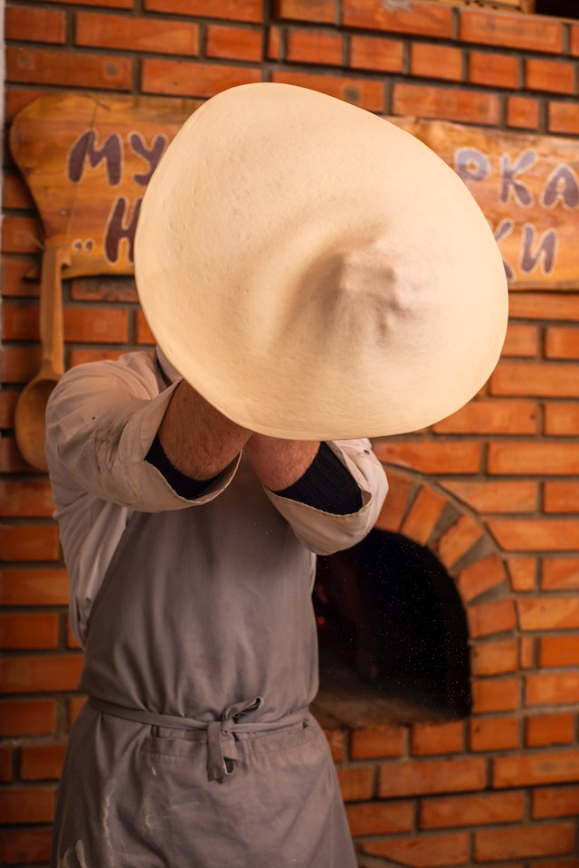

Conheça nossa história
Nossa história começa na década de 60, onde Don Ramon, um empresário
renomado e um apaixonado por pizzas criou a "Pizzaria Speranza" em
Vila Kennedy, Rio de Janeiro, uma das primeiras pizzarias da cidade.
Em 1980 fomos considerados a pizzaria mais famosa do Rio, onde fizemos
sucesso até o final da década de 90. Em 15 de junho de 2011, após atos
de vandalismo que destruiram o nosso estabelecimento, a primeira
cabine de UPP da Vila Kennedy criou uma vaquinha entre os policiais e
moradores para nos ajudar a reerguer a pizzaria, com o dinheiro
arrecadado nós criamos a "Pizzaria UPP" em homenagem aos policiais que
caridosamente iniciaram o movimento de reforma de nossa pizzaria.
Nossa volta ao mundo das pizzas ocorreu em 08 de agosto de 2011 e
seguimos fazendo sucesso até os dias atuais.
Nós da Pizzaria Upp somos apaixonados pela arte de fazer pizza. Com
mais de 10 anos de experiência no mercado, nossa equipe é dedicada em
criar as melhores pizzas com ingredientes de qualidade e sabores
únicos. Nosso compromisso é fazer da sua experiência conosco algo
inesquecível, servindo pizza deliciosa em um ambiente aconchegante e
acolhedor. Acreditamos que a comida não é apenas uma necessidade, mas
também uma forma de arte que deve ser valorizada.
Nossa equipe
Contamos com uma equipe de profissionais altamente capacitados e comprometidos em oferecer a melhor experiência de compra aos nossos clientes. Trabalhamos juntos para garantir a qualidade dos nossos produtos e para manter a excelência no atendimento.
Nossos valores
- Comprometimento com a satisfação dos clientes;
- Respeito aos colaboradores, fornecedores e parceiros;
- Transparência nas relações comerciais;
- Inovação constante em nossos produtos e serviços;
- Responsabilidade social e ambiental.